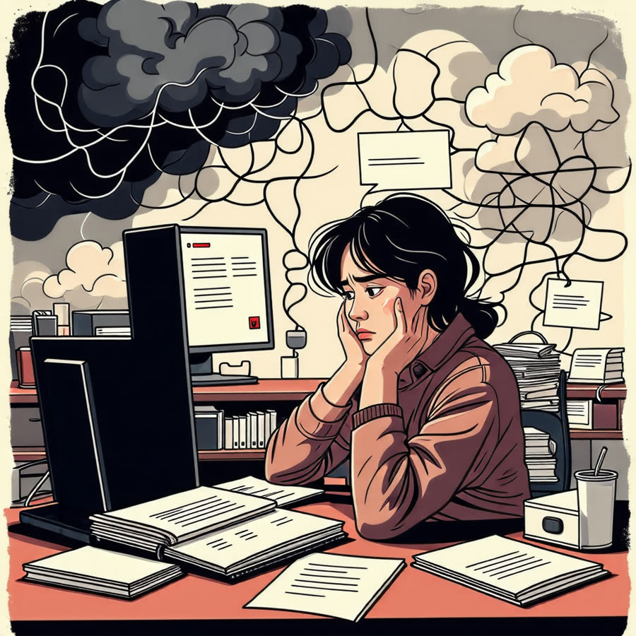
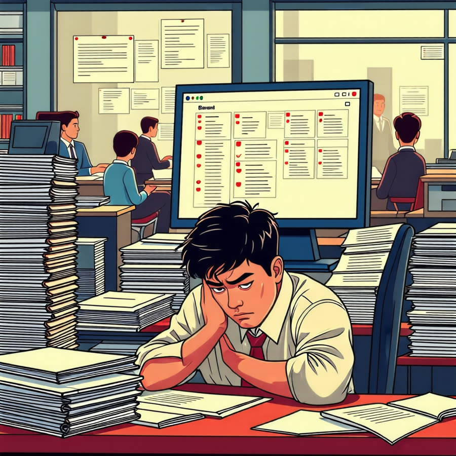

화병을 이기는 법, 스트레스 관리의 모든 것!
안녕하세요, 생각공작소 입니다 :)
우리는 일상에서 갈등을 피하고자 억울한 상황을 참고 넘어가야 할 때가 많습니다.😭
하지만, 이러한 감정을 지속적으로 억누르면
결국 몸과 마음에 심각한 영향을 미칠 수 있습니다.
이로 인해 발생하는 질환이 바로 화병(火病) 입니다. 😣
오늘은 화병에 대한 이해를 높이고, 건강한 감정 관리를 통해 더 나은 삶을 영위할 수 있도록
화병의 정의와 원인, 증상, 그리고 예방과 극복 방법에 대해 함께 알아보아요 :)

화병의 정의와 원인
화병은 한국 문화에서 주로 나타나는 심리적 문제로,
분노와 억울함과 같은 부정적인 감정이 쌓여서 나타나는 증상을 말합니다.
미국정신의학협회에서 발행한 'DSM-5'에서는 화병을 분노증후군의 일환으로 분류하고 있으며,
이는 단순히 한국인에게만 국한된 문제가 아니라,
전 세계적으로 공통적으로 나타날 수 있는 감정적 반응입니다.
화병의 주된 원인
1. 가족 간의 갈등
가족 내의 소통 부족이나 갈등이 화병을 유발할 수 있습니다.
특히, 세대 간의 이해 차이나 갈등은 심리적 압박을 가중시킵니다.
2. 직장 내 스트레스
직장에서의 과중한 업무, 대인 관계의 어려움 등은 화병의 중요한 원인입니다.
직장 생활에서의 스트레스는 개인의 감정 상태에 심각한 영향을 미칠 수 있습니다.
3. 개인의 실패
목표 달성의 실패나 예상치 못한 상황의 변화는
개인에게 큰 심리적 타격을 주어 화병을 유발할 수 있습니다.
4. 특정 집단
갱년기 여성이나 학업 스트레스에 시달리는 청소년은 특히 화병에 더 취약한 경향이 있습니다.
이들은 감정적으로 힘든 시기를 겪으며,
이러한 감정을 적절히 해소하지 못할 경우 화병으로 이어질 수 있습니다.
이처럼 화병은 다양한 사회적, 개인적 요인이
복합적으로 작용하여 발생합니다.
이를 이해하고 적절한 대처 방법을 찾는 것이 중요합니다. 👌

화병의 대표적 증상
화병은 신체적, 정신적 증상이 복합적으로 나타나는 특징이 있습니다.
주요 증상은 다음과 같습니다.
신체적 증상
숨 막힘 : 심리적 압박감으로 인해 호흡이 어려워지는 느낌을 경험할 수 있습니다.
두통 : 스트레스와 긴장으로 인한 지속적인 두통이 나타날 수 있습니다.
소화불량 : 소화 시스템에 영향을 미쳐 식욕 감소나 복통이 동반될 수 있습니다.
열감 : 얼굴이나 몸에 열이 오르는 느낌을 자주 경험하게 됩니다.
정신적 증상
불면증 : 스트레스와 불안으로 인해 잠을 잘 이루지 못하는 경우가 많습니다.
만성적인 분노 : 사소한 일에도 쉽게 화가 나거나 짜증을 내는 경향이 생길 수 있습니다.
무기력감 : 일상적인 활동에 대한 흥미가 사라지고, 에너지가 부족하게 느껴질 수 있습니다.
이러한 증상들은 서로 밀접하게 연결되어 있으며,
감정을 억누를수록 더욱 심각해질 수 있습니다.
예를 들어, 신체적 증상이 심화되면 정신적 고통이 가중되어
결국 일상생활에 큰 지장을 초래할 수 있습니다.
따라서, 조기에 증상을 인식하고 적절한 대처를 하는 것이 중요합니다.
화병의 예방과 극복 방법
화병을 예방하고 극복하기 위해서는 스트레스를 효과적으로 관리하는 것이 중요합니다.
다음과 같은 방법들이 도움이 될 수 있습니다.
1. 감정 나누기
친구나 가족과의 솔직한 대화는 감정을 표현하고 해소하는 데 큰 도움이 됩니다.
자신의 감정을 털어놓음으로써 스트레스를 줄이고, 상대방의 지지를 받게 됩니다.
2. 명상과 마음챙김
명상 : 조용한 공간에서 호흡에 집중하고 마음을 가라앉히는 명상은 스트레스 완화에 매우 효과적입니다.
정기적으로 명상을 실천하면 정서적 안정감을 높일 수 있습니다.
마음챙김 : 현재 순간에 집중하고, 감정이나 생각을 판단하지 않고 받아들이는 연습을 통해
스트레스를 줄이는 데 도움이 됩니다.
3. 감정 관리 연습
일시적으로 벗어나기 : 화가 나는 상황에서 잠시 자리를 피하거나 심호흡을 통해 감정을 가라앉히는
것이 중요합니다. 이렇게 함으로써 감정이 격해지는 것을 예방할 수 있습니다.
문제 해결의 원칙 : 일상에서 발생하는 문제는 그날 안에 해결하려고 노력하고,
감정적으로 지치지 않도록 스스로의 감정을 관리하는 연습을 합니다.
4. 신체 활동
운동 : 규칙적인 신체 활동은 스트레스를 해소하는 데 도움이 됩니다.
걷기, 요가, 수영 등 자신에게 맞는 운동을 찾아 꾸준히 실천하는 것이 중요합니다.
5. 전문가의 도움
필요할 경우 심리 상담이나 전문가의 도움을 받는 것도 좋은 방법입니다.
전문가와의 상담은 감정을 정리하고, 스트레스 관리 전략을 배우는 데 큰 도움이 됩니다.
인천시 남동구, 연수구, 미추홀구, 서구 에 위치한 #심리상담센터 로
전연령층과 전직종을 대상으로 #심리상담 을 도와주는 곳입니다. :)
평생을 미술치료와 심리상담에 종사하신 소장님과
실력과 경험 많은 상담사들이 당신을 기다리고 있습니다.
더욱 자세한 정보는 문의를 통해 확인해주세요 :)
T. 032-277-2007